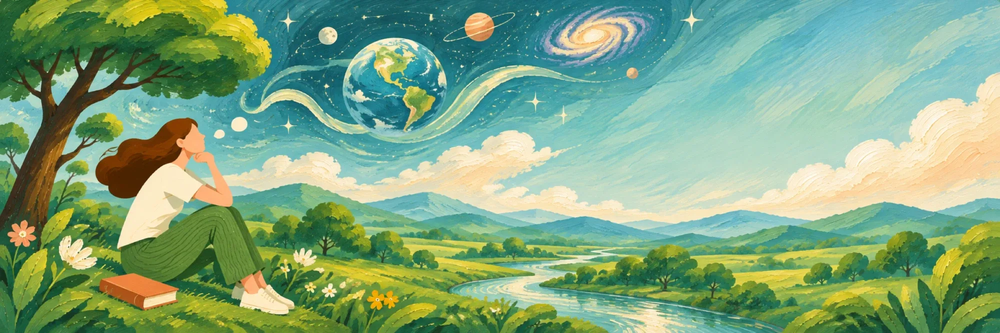

Космологическая картина мира —
история того, как у мираисчезли центр и край
Космология — самая головокружительная из научных картин мира: она отвечает не на вопрос «как устроена эта вещь», а на вопрос «как устроено всё». Каков мир в целом, есть ли у него центр, есть ли край, было ли начало, будет ли конец. И именно эта картина за две с половиной тысячи лет менялась радикальнее прочих — и всегда в одну сторону: к растворению границ. Мир, поначалу уютный, конечный и центрированный на человеке, шаг за шагом терял центр, край, неподвижность, а под конец — и уверенность в том, что он один. Ниже — девять вех этого пути, от мифологического космоса с твердью небесной до расширяющейся Вселенной без центра, на девять десятых состоящей из неизвестного.
Как менялось представление о Вселенной как целом
Из всех научных картин мира космологическая — самая головокружительная. Она отвечает не на вопрос «как устроена эта вещь», а на вопрос «как устроено всё»: каков мир в целом, есть ли у него центр, есть ли край, было ли у него начало, будет ли конец. И именно эта картина за две с половиной тысячи лет менялась радикальнее прочих.
История тут движется в одну узнаваемую сторону — к растворению границ. Мир, который поначалу был уютным, конечным и центрированным на человеке, шаг за шагом терял центр, терял край, терял неподвижность, а под конец потерял и уверенность в том, что он один. Каждый такой шаг делался не из желания принизить человека, а из простого упрямства: посмотреть внимательнее, померить точнее, довести мысль до конца.
Ниже — девять вех этого пути: от мифологического космоса с твердью небесной до Вселенной без центра и края, расширяющейся, на девять десятых состоящей из неизвестного. Сквозной сюжет один: где во всём этом находимся мы — в середине мира, на его краю или нигде в особенности.
Мифологический космос —
мир как трёхэтажный дом
Древнейшие картины Вселенной были не измерениями, а образами порядка. Почти всюду мир мыслился как многоярусная постройка: плоская земля посередине, под ней — подземный мир мёртвых, над ней — небесный свод, твердь, к которой прикреплены светила. У вавилонян, египтян, в библейской книге Бытия небо — это купол или шатёр, отделяющий «воды над твердью» от «вод под твердью».
Это не была наивность в нашем смысле. Такая картина точно соответствовала опыту: земля под ногами неподвижна и плоска, небо изгибается куполом, светила ходят по нему. Она давала главное, чего ждали от космологии, — место человека. Мир имел верх и низ, центр и края, священное и профанное; человек стоял в середине, между небом и преисподней, и это положение было полно смысла.
Важно, что это уже картина мира как целого — со структурой, границами и логикой. Наука не начнёт с чистого листа: она будет спорить именно с этим образом замкнутого, устроенного, центрированного космоса — и потратит два тысячелетия, чтобы его разомкнуть.
Космос сфер —
конечный, шарообразный, измеренный
Греки сделали с космологией то, чего не делал миф: стали её мерить. И первое же измерение оказалось контринтуитивным — Земля круглая. Аристотель приводил доказательства: круглая тень Земли на Луне при затмениях, изменение видимых созвездий при движении на юг. А около 240 года до н.э. Эратосфен, сравнив длину теней в Сиене и Александрии, вычислил окружность Земли с ошибкой всего в несколько процентов. Мир впервые получил не образ, а размер.
Аристотель встроил шарообразную Землю в систему вложенных прозрачных сфер, несущих Луну, Солнце, планеты и звёзды. Крайняя сфера неподвижных звёзд замыкала конечный космос; за ней не было ничего. Клавдий Птолемей в «Альмагесте» довёл эту геоцентрическую схему до работающего инструмента, предсказывавшего движения планет.
Любопытно, что альтернатива предлагалась рано: Аристарх Самосский около 270 года до н.э. поставил в центр Солнце. Но гелиоцентризм противоречил и здравому смыслу (Земля не ощущается движущейся), и физике Аристотеля, и не давал наблюдаемого смещения звёзд — поэтому его отвергли почти на восемнадцать веков. Космос остался конечным, шарообразным, с Землёй в середине.
Солнце в центре —
и трещины в небесных сферах
Николай Коперник в 1543 году вернул идею Аристарха, поставив в центр Солнце, а Землю сделав рядовой планетой. Поначалу это был скорее вопрос удобства расчёта, но следствие оказалось мировоззренческим: Земля сдвинулась из центра, и вместе с ней сдвинулся человек.
Дальше рухнули сами хрустальные сферы. Тихо Браге наблюдал в 1572 году вспышку новой звезды, а в 1577 — комету, и точными измерениями доказал, что оба явления происходят выше Луны, в области «неизменных» небес, — и что комета свободно проходит там, где полагались твёрдые сферы. Небеса оказались изменчивыми, а сфер, к которым крепились светила, попросту нет.
Иоганн Кеплер лишил орбиты последней идеальной формы, показав, что планеты движутся по эллипсам. А Галилей навёл на небо телескоп и увидел горы на Луне, спутники Юпитера, фазы Венеры и то, что Млечный Путь состоит из бесчисленных звёзд. Небо перестало быть гладкой сферой светильников; оно оказалось глубоким и полным тел. Конечный уютный космос древних начал разъезжаться по швам.
Бесконечная Вселенная —
космос теряет край
Если сферы неподвижных звёзд больше нет, то где кончается мир? Джордано Бруно ответил радикально: нигде. В сочинении «О бесконечности, Вселенной и мирах» (1584) он утверждал, что пространство бесконечно, звёзды — это далёкие солнца, а вокруг них — бесчисленные обитаемые миры. За эти и другие взгляды инквизиция сожгла его в 1600 году; но мысль оказалось не сжечь.
Ньютоновская физика сделала бесконечность почти неизбежной. Если Вселенная конечна, рассуждали, тяготение стянуло бы всё вещество в один ком; бесконечное же равномерное распределение звёзд может (казалось) удерживаться в равновесии. Пространство стало бесконечной, пустой, однородной сценой без центра и без края. Историк Александр Койре назвал этот сдвиг переходом «от замкнутого мира к бесконечной Вселенной» — потерей дома, стен и середины.
У бесконечности, однако, обнаружился тревожный изъян. Если звёзд бесконечно много и они всюду, то любой луч зрения рано или поздно упрётся в звезду — и небо должно пылать сплошным светом. Почему же ночью темно? Этот вопрос, известный как парадокс Ольберса (1823), веками не имел ответа. Разгадка придёт лишь в XX веке и окажется ошеломляющей: небо тёмное, потому что Вселенная не вечна и расширяется.
Острова-вселенные —
наша Галактика — одна из миллиардов
К XVIII веку стало ясно, что звёзды образуют огромный диск — Млечный Путь. Уильям Гершель, подсчитывая звёзды в разных направлениях, впервые набросал его форму. Но оставался вопрос: этот звёздный остров — и есть вся Вселенная, или таких островов много? Туманные пятна вроде «туманности Андромеды» — это облака газа внутри нашей системы или отдельные, невообразимо далёкие звёздные миры?
Спор дошёл до кульминации в 1920 году — знаменитый «Великий спор» между Харлоу Шепли, считавшим Млечный Путь всей Вселенной, и Гербером Кёртисом, отстаивавшим «островные вселенные». Разрешил его Эдвин Хаббл: в 1925 году он разглядел в туманности Андромеды отдельные звёзды-цефеиды и по ним измерил расстояние — оно оказалось чудовищно большим, далеко за пределами Млечного Пути. Андромеда — не облако, а другая галактика.
Так Вселенная разом выросла в масштабе, не поддающемся воображению. Наш Млечный Путь — одна галактика среди сотен миллиардов, и Солнце в нём — не в центре, а на скромной окраине одного из спиральных рукавов. После Коперника Земля перестала быть центром Солнечной системы; теперь и сама система оказалась пылинкой на задворках рядовой галактики.
Расширяющаяся Вселенная —
у мира появляется начало
Общая теория относительности Эйнштейна (1915) впервые позволила описать Вселенную как целое — через геометрию пространства-времени. Но, применив её к космосу, Эйнштейн столкнулся с тем, что уравнения не давали статичного мира: Вселенная должна была либо расширяться, либо сжиматься. Убеждённый, что она неизменна, он добавил в уравнения «космологическую постоянную», чтобы удержать её неподвижной, — и позже назвал это крупнейшей ошибкой своей жизни.
Математики оказались смелее. Александр Фридман в 1922 году и независимо Жорж Леметр в 1927 нашли решения, описывающие расширяющуюся Вселенную. А в 1929 году Эдвин Хаббл обнаружил это наблюдательно: свет далёких галактик смещён в красную сторону спектра, и чем галактика дальше, тем сильнее смещение. Галактики разбегаются; Вселенная расширяется.
Следствие переворачивало всё. Если сегодня всё разлетается, то вчера всё было ближе, а достаточно давно — сжато в одну точку. У Вселенной есть не только пространство, но и возраст, история, начало. Леметр назвал это начало «первоатомом». Заодно разрешался парадокс Ольберса: небо тёмное, потому что Вселенная конечна во времени и расширяется — свет далёких звёзд либо ещё не дошёл, либо ослаблен растяжением пространства.
Большой взрыв —
у Вселенной измеряют возраст
Идея начала долго казалась подозрительной — слишком похожей на сотворение мира. Ей противостояла теория стационарной Вселенной Фреда Хойла, где материя вечно рождается понемногу, а мир в целом неизменен. Именно Хойл, издеваясь над конкурирующей гипотезой, и пустил в оборот название «Большой взрыв» (Big Bang) — оно прижилось вопреки его намерению.
Спор решило предсказание. Георгий Гамов с учениками Ральфом Альфером и Робертом Херманом в конце 1940-х рассчитали: если Вселенная началась горячей и плотной, от той эпохи должно остаться остывшее послесвечение — слабое излучение, равномерно заполняющее всё небо. В 1965 году Арно Пензиас и Роберт Вилсон, настраивая антенну, наткнулись на необъяснимый шум, приходящий отовсюду одинаково. Это и было реликтовое излучение — свет юной Вселенной, предсказанный за пятнадцать лет до того.
С этого момента космология стала точной наукой. Мир получил дату рождения: около 13,8 миллиарда лет назад, из горячего плотного состояния. Стало возможно рассчитать, как в первые минуты синтезировались лёгкие ядра, как спустя сотни тысяч лет Вселенная остыла настолько, что стала прозрачной, — тот самый момент, чей свет мы и ловим как реликтовый фон. У всего сущего оказалась общая биография.
Тёмная Вселенная —
девять десятых мира неизвестны
Едва получив возраст и историю, Вселенная преподнесла новое унижение: почти всё в ней — невидимо и непонятно. Ещё в 1933 году Фриц Цвикки заметил, что галактики в скоплениях движутся слишком быстро — видимого вещества не хватает, чтобы удержать их тяготением. В 1970-е Вера Рубин измерила вращение спиральных галактик и обнаружила то же: звёзды на окраинах несутся так, будто галактику держит огромная невидимая масса. Её назвали тёмной материей — она не светится и проявляет себя только тяготением.
В 1998 году пришёл ещё более странный результат. Наблюдая далёкие сверхновые, две группы астрономов ожидали увидеть, что расширение Вселенной замедляется под собственным тяготением. Вместо этого оказалось, что расширение ускоряется — будто пространство расталкивает некая «тёмная энергия». За это открытие дали Нобелевскую премию 2011 года.
Итог отрезвляет. Обычное вещество — всё, из чего состоят звёзды, планеты, мы сами, — это около пяти процентов содержимого Вселенной. Ещё примерно четверть — тёмная материя, остальное — тёмная энергия. О девяноста пяти процентах мира мы знаем лишь то, что они есть. Гипотеза космической инфляции (Алан Гут, 1980) добавила, что в первые доли мгновения Вселенная раздулась экспоненциально, — и это объясняет её однородность, но само требует объяснения. Картина мира впервые честно признаёт: она в основном про неизвестное.
Космос без центра —
и, возможно, не один
Современная космология довела коперниканский ход до предела. В её основании лежит космологический принцип: в больших масштабах Вселенная всюду одинакова и во всех направлениях одинакова — а значит, у неё нет ни центра, ни выделенного места, ни края в привычном смысле. Расширяется не вещество внутри пространства, а само пространство; спрашивать, «куда» оно расширяется и «где» произошёл Большой взрыв, — значит по инерции искать центр там, где его нет. Взрыв случился везде.
При этом мы видим не всё. Свет успел дойти лишь из ограниченной области — наблюдаемой Вселенной, около 93 миллиардов световых лет в поперечнике; что за её горизонтом, мы не знаем в принципе. А некоторые версии инфляции идут дальше и допускают, что наша Вселенная — лишь один «пузырь» среди бесчисленных других, с, возможно, иными законами. Гипотеза мультивселенной пока не проверяема и остаётся спорной — но само её появление показательно: даже единственность мира перестала быть очевидной.
Так завершается долгий путь размыкания. Мир, начавшийся трёхэтажным домом с человеком в середине, стал безграничным, расширяющимся, на девять десятых тёмным, лишённым центра пространством, которое, быть может, даже не одно. Трудно вообразить более полное смещение человека из центра вещей.
От Большого взрыва до нас —
13,8 миллиарда лет одним взглядом
Космическую историю трудно почувствовать, потому что числа слишком велики. Ниже — сначала честная пропорция (где на самом деле находятся события во времени), а затем ключевые события по порядку, крупно и с иконками.
Если сжать все 13,8 миллиарда лет в один год, Большой взрыв придётся на 1 января, Солнце и Земля появятся в начале сентября, первые микроорганизмы — в конце сентября, а человек разумный — 31 декабря, за считанные минуты до полуночи. Вся письменная история — последние секунды года.
Итог: пылинка, которая смотрит
История космологической картины мира читается как непрерывное умаление человека. Мы потеряли центр Вселенной, потом центр Солнечной системы, потом сколько-нибудь особое место в Галактике, потом — уверенность, что наша Галактика чем-то выделена, и наконец — саму идею центра и, может быть, единственность мира. На каждом шаге дом становился больше, холоднее и безразличнее.
Но у этого умаления есть оборотная сторона, и она меняет тон. Ту же науку, что вынесла нас на задворки бесконечного тёмного космоса, эта наука сделали мы — существа с одной небольшой планеты. Вселенная, разбегающаяся и почти сплошь неизвестная, оказалась при этом познаваемой: её возраст измерен, её начало восстановлено, её свет пойман антенной в Нью-Джерси. Мы буквально сделаны из вещества, синтезированного в звёздах; космос, изучая себя, смотрит в том числе и нашими глазами.
Для экологического взгляда здесь важен не пафос, а масштаб. Космология даёт то же самое глубокое время и ту же трезвую скромность, что и наука о Земле: понимание, что человек — не мера и не цель мироздания, а его крошечная, недавняя и хрупкая часть. Знаменитый снимок Земли как «бледной голубой точки», сделанный «Вояджером» с края Солнечной системы, и вся история этой картины говорят об одном: другого дома у этой пылинки нет, и беречь стоит именно его.
Мир потерял центр — и оказалось, что смотреть на него можно только изнутри.